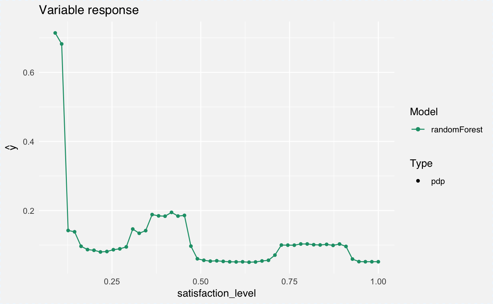
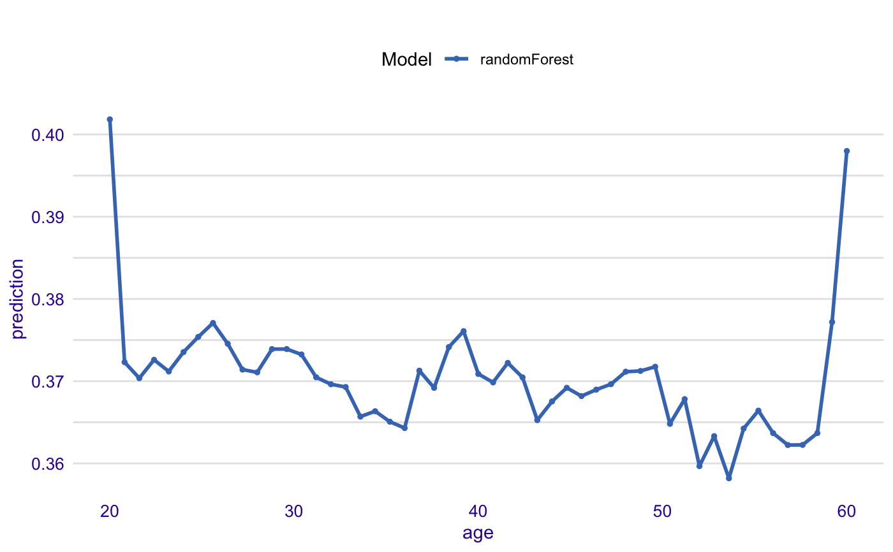
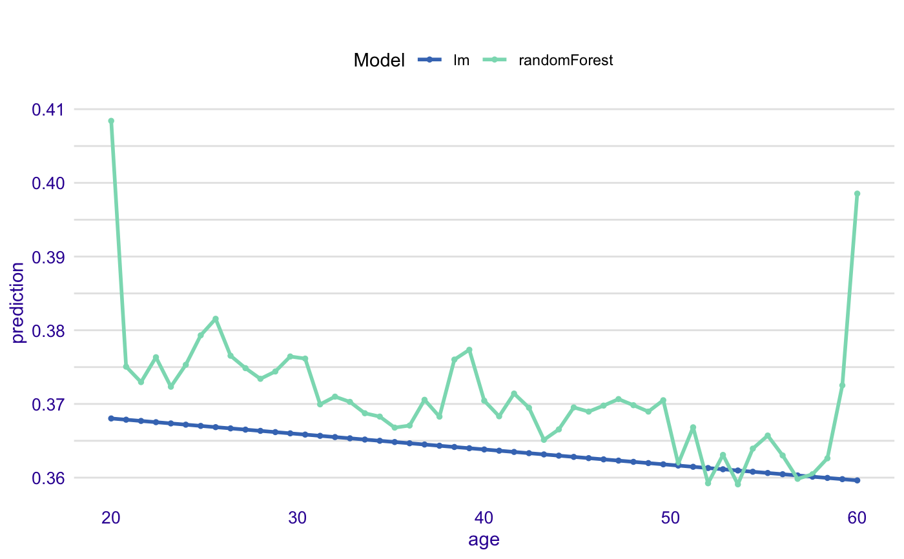
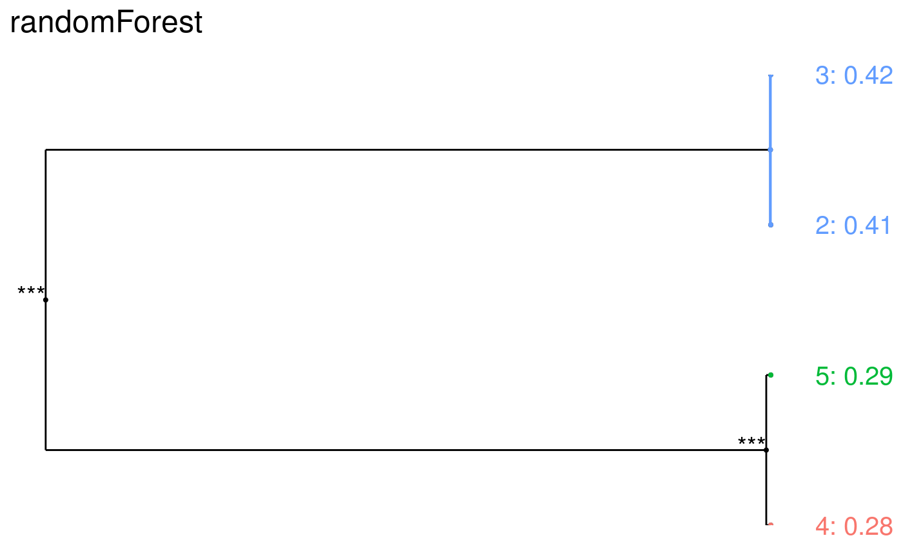
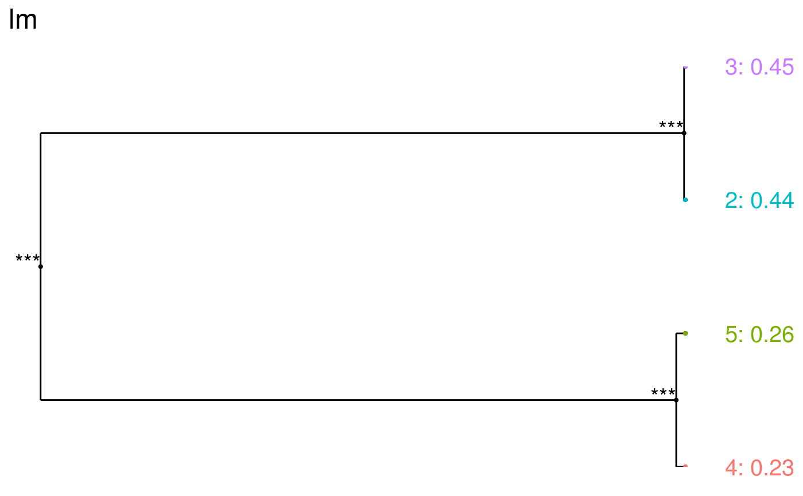
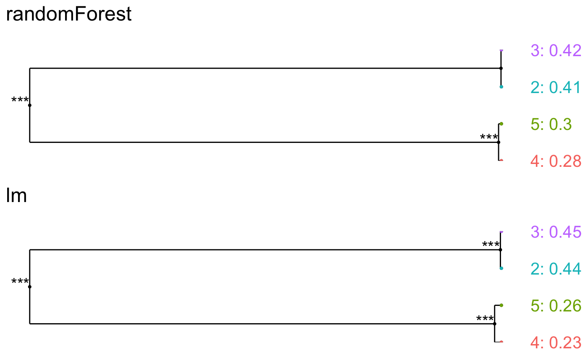

R/variable_response.R
variable_response.RdCalculates the average model response as a function of a single selected variable. Use the 'type' parameter to select the type of marginal response to be calculated. Currently for numeric variables we have Partial Dependency and Accumulated Local Effects implemented. Current implementation uses the 'pdp' package (Brandon M. Greenwell (2017). pdp: An R Package for Constructing Partial Dependence Plots. The R Journal, 9(1), 421--436.) and 'ALEPlot' (Dan Apley (2017). ALEPlot: Accumulated Local Effects Plots and Partial Dependence Plots.)
variable_response(explainer, variable, type = "pdp", trans = I, ...)
| explainer | a model to be explained, preprocessed by the 'explain' function |
|---|---|
| variable | character - name of a single variable |
| type | character - type of the response to be calculated. Currently following options are implemented: 'pdp' for Partial Dependency and 'ale' for Accumulated Local Effects |
| trans | function - a transformation/link function that shall be applied to raw model predictions. This will be inherited from the explainer. |
| ... | other parameters |
An object of the class 'svariable_response_explainer'. It's a data frame with calculated average response.
This function is set deprecated. It is suggested to use partial_dependency, accumulated_dependency instead.
Find information how to use these functions here: https://pbiecek.github.io/PM_VEE/partialDependenceProfiles.html and https://pbiecek.github.io/PM_VEE/accumulatedLocalProfiles.html.
For factor variables we are using the 'factorMerger' package.
Please note that the argument type must be set to 'factor' to use this method.
Predictive Models: Visual Exploration, Explanation and Debugging https://pbiecek.github.io/PM_VEE/
HR$evaluation <- factor(HR$evaluation) HR_glm_model <- glm(status == "fired"~., data = HR, family = "binomial") explainer_glm <- explain(HR_glm_model, data = HR)#> Preparation of a new explainer is initiated #> -> model label : lm ( default ) #> -> data : 7847 rows 6 cols #> -> target variable : not specified! ( WARNING ) #> -> predict function : yhat.glm will be used ( default ) #> -> predicted values : numerical, min = 0.0080342 , mean = 0.3638333 , max = 0.7717605 #> -> residual function : difference between y and yhat ( default ) #> -> model_info : package stats , ver. 3.6.1 , task regression ( default ) #> A new explainer has been created!#> Warning: The response has five or fewer unique values. Are you sure you want to do regression?#> Preparation of a new explainer is initiated #> -> model label : randomForest ( default ) #> -> data : 7847 rows 6 cols #> -> target variable : not specified! ( WARNING ) #> -> predict function : yhat.randomForest will be used ( default ) #> -> predicted values : numerical, min = 0.06949928 , mean = 0.3633743 , max = 0.804568 #> -> residual function : difference between y and yhat ( default ) #> -> model_info : package randomForest , ver. 4.6.14 , task regression ( default ) #> A new explainer has been created!# Example for factor variable (with factorMerger) expl_rf <- variable_response(explainer_rf, variable = "evaluation", type = "factor") plot(expl_rf)#> #>expl_glm <- variable_response(explainer_glm, variable = "evaluation", type = "factor") plot(expl_glm)#> #>#> #>#> #># }